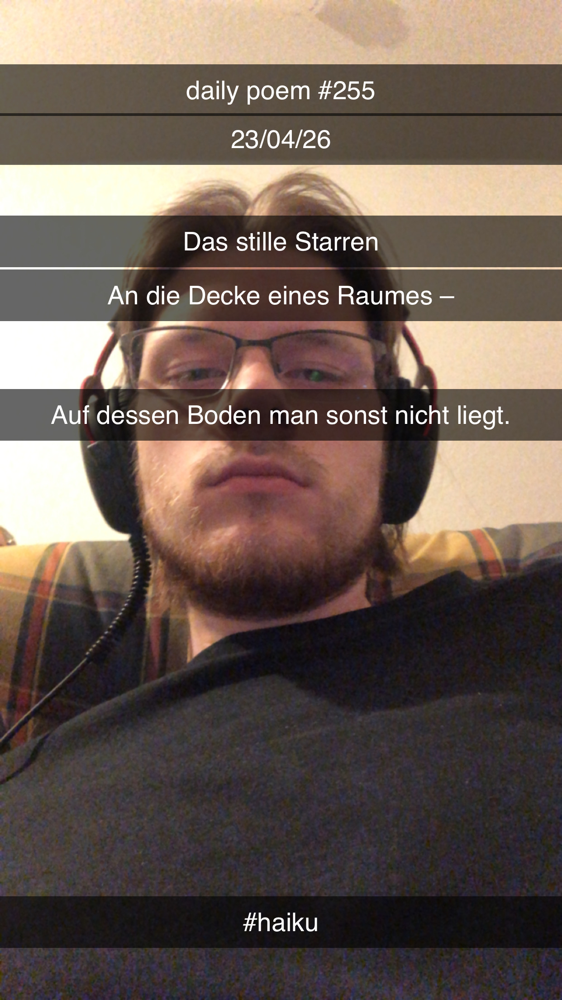

Stilles Starren Haiku [255] 23/04/2026 Das stille Starren An die Decke eines Raumes – Auf dessen Boden man sonst nicht liegt. 
Anmerkungen
ich lag auf dem küchenboden und starrte an die decke und es war so still wie lange nicht